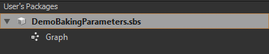
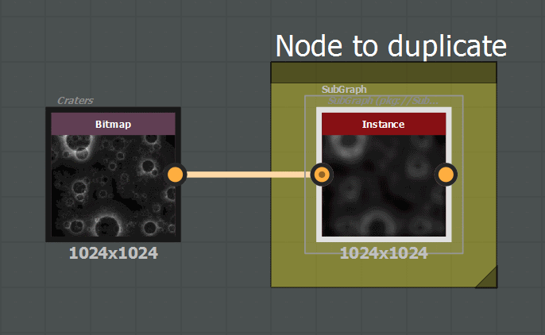
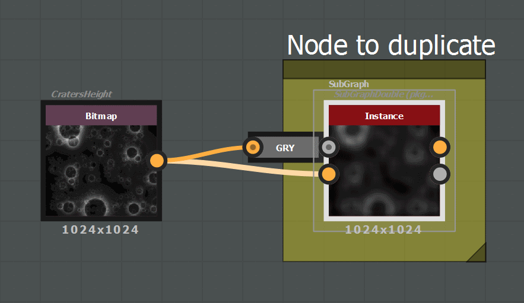
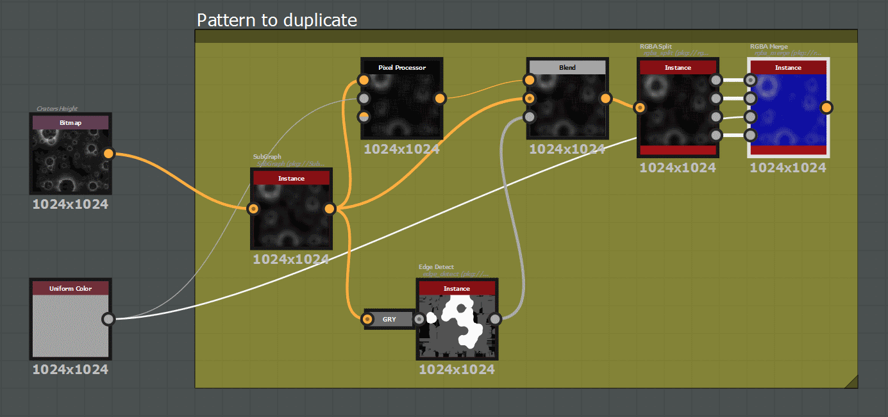
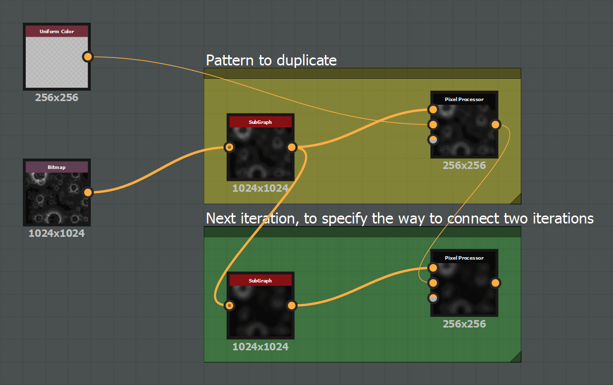
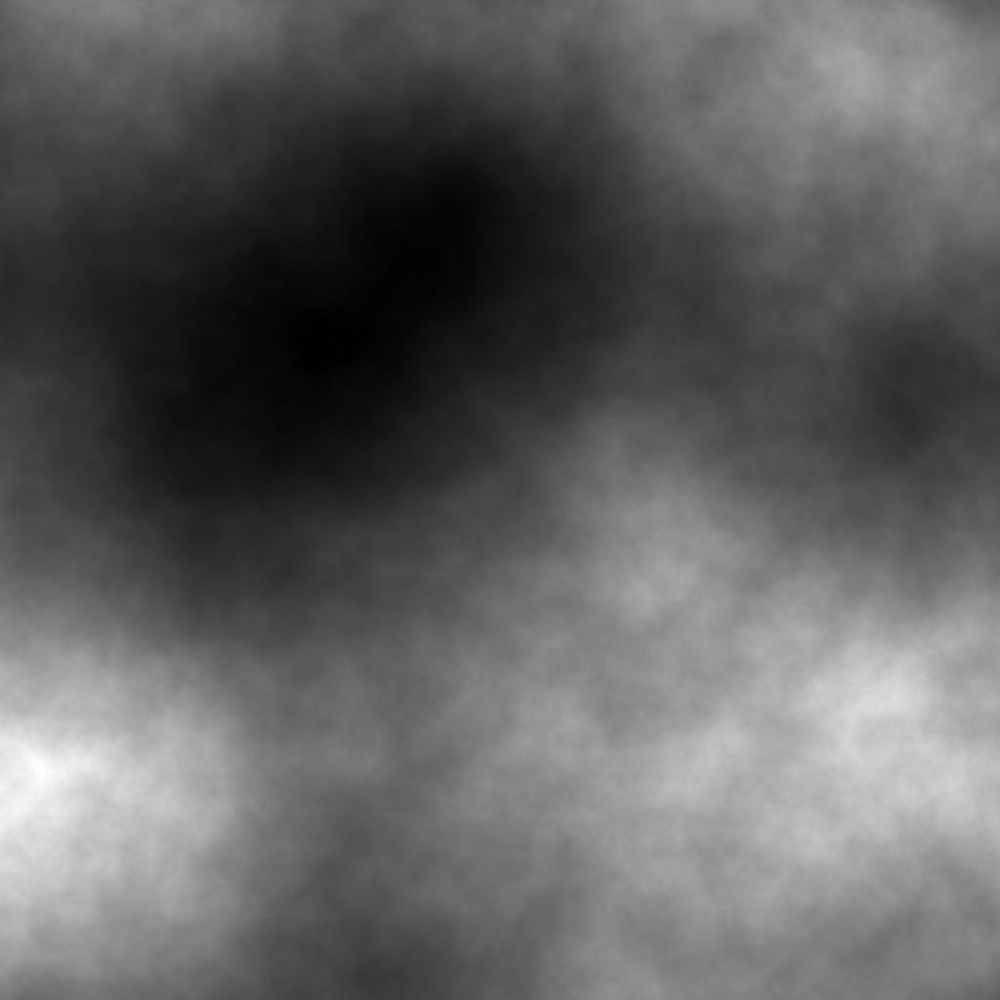
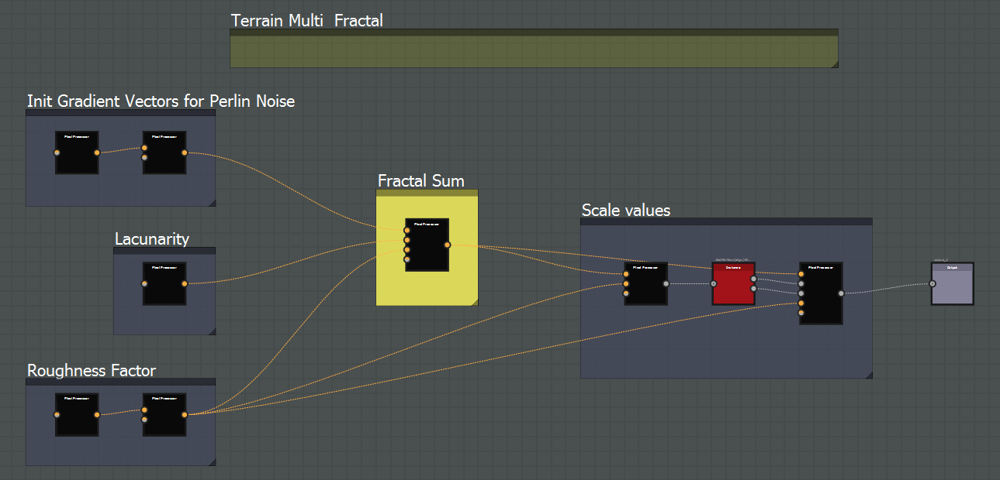
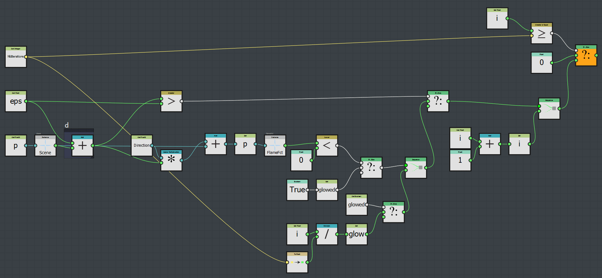
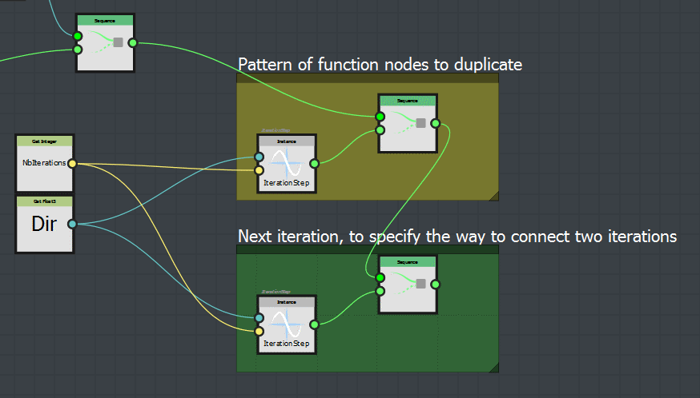
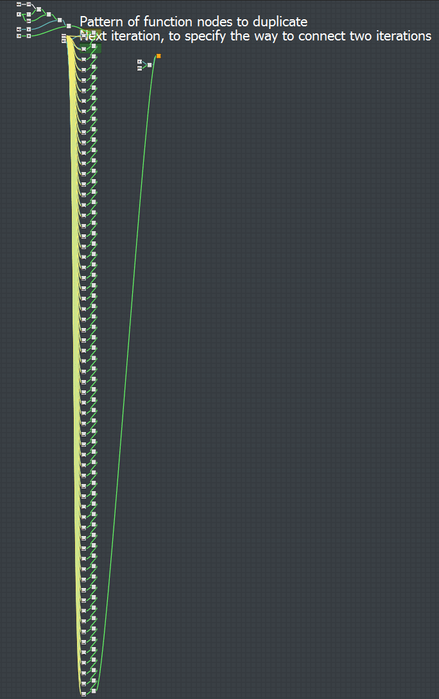

Substances modification
This API may also be used to modify existing substances, to automatize an update of a set of substances, or to apply the same modification on many nodes or graph.
Massive modification of Substances
demos.demoMassiveModification() demonstrates the modification of the Output size of all Graphs included in the substance sample/blend_switch.sbs, and the Pixel format of all Input nodes included in each Graph.python demos.py -fct: demoMassiveModification -args: "../sample/argsDemoMassiveModification.xml"
On a package (SBSDocument), the following modifications can be done:
# Relocate a linked resource
myResource = sbsDoc.getSBSResource('myResourceIdentifier') # Get the resource from its identifier
myResource = sbsDoc.getSBSResourceFromPath('<myAbsolutePath>/myResourceFilename.png') # Get the resource from its absolute path
myResource = sbsDoc.getObjectFromInternalPath('pkg:///myGroup/myResourceIdentifier') # Get the resource from its internal path
sbsDoc.relocateResource(myResource, aNewPath='<myNewAbsolutePath>/myNewFilename.png') # Relocate the resource
# Move a graph/function/resource/group under a group
# -> it updates all the references on this object inside the current package)
sbsDoc.moveObjectUnderGroup(aObject=myGraph, aGroup='pkg:///Graphs') # Move the graph under the group named 'Graphs'
sbsDoc.moveObjectUnderGroup(aObject=myGraph, aGroup=None) # Move the graph under the root package content
# Set the identifier of a graph/function/resource/group
# -> It updates all the references on this object inside the current package
sbsDoc.setObjectIdentifier(aObject=myGraph, aIdentifier='myNewGraphName')
On a graph (SBSGraph), the following modifications can be done for instance:
# Create a new input parameter, named 'InputColor', with a RGBA color widget
aParam = aSubGraph.addInputParameter(aIdentifier = 'InputColor',
aWidget = sbsenum.WidgetEnum.COLOR_FLOAT4,
aDefaultValue = [1,1,1,1],
aLabel = 'Input Color')
# Modify a base parameter: Set the output size for instance
aGraph.setBaseParameterValue(aParameter = sbsenum.CompNodeParamEnum.OUTPUT_SIZE,
aParamValue = [sbsenum.OutputSizeEnum.SIZE_1024,sbsenum.OutputSizeEnum.SIZE_1024],
aRelativeTo = sbsenum.ParamInheritanceEnum.ABSOLUTE)
# Set attributes and icon
aGraph.setAttribute(aAttributeIdentifier = sbsenum.AttributesEnum.Author, aAttributeValue='Substance Designer API')
aGraph.setIcon(aIconAbsPath = myIconPath))
# Create parameter presets
aPreset = aGraph.createPreset(aLabel='DefaultPreset', setCurrentDefaultValues=True)
aPreset.setPresetInput(aInputParam=aParam, aPresetValue=[0.1, 0.2, 0.3, 1])
# Connect/Disconnect two nodes (the input and output can be specified or not, depending on the possible ambiguity)
aGraph.connectNodes(aLeftNode = aFirstNode, aRightNode = aSecondNode)
aGraph.connectNodes(aLeftNode = aFirstNode, aRightNode = aSecondNode, aLeftNodeOutput='myOutput', aRightNodeInput=sbsenum.InputEnum.OPACITY)
aGraph.disconnectNodes(aLeftNode = aFirstNode, aRightNode = aSecondNode)
# Move the connections on a pin input/output to another pin input/output
aGraph.moveConnectionsOnPinOutput(aInitialNode = rgbaSplitNode, aInitialNodeOutput = 'R',
aTargetNode = rgbaSplitNode, aTargetNodeOutput = 'G')
aGraph.moveConnectionOnPinInput(aInitialNode = blendNode, aInitialNodeInput = sbsenum.InputEnum.DESTINATION,
aTargetNode = embossNode, aTargetNodeInput = sbsenum.InputEnum.INPUT_GRADIENT)
On a compositing node (SBSCompNode), several functions allow to modify a node:
# Modify a Parameter: Set the output pixel format for instance
aCompNode.setParameterValue(aParameter = sbsenum.CompNodeParamEnum.OUTPUT_FORMAT,
aParamValue = sbsenum.OutputFormatEnum.FORMAT_16BITS,
aRelativeTo = sbsenum.ParamInheritanceEnum.ABSOLUTE)
# Define a parameter as dynamic, handled by the input parameter named 'InputColor' defined in the parent graph:
aDynFunction = aCompNode.setDynamicParameter(sbsenum.CompNodeParamEnum.OUTPUT_COLOR)
aDynFunction.setToInputParam(aParentGraph, aInputParamIdentifier='InputColor')
There are equivalent functions for Function graph (SBSFunction) and function node (SBSParamNode).
Baking Parameters modification
demos.demoBakingParameters() gives a brief overview of what the API allows to do regarding the baking parameters.The initial substance DemoBakingParameters.sbs provided in the folder sample/ is almost empty and contains no resource.
{kind=link}
# Add a new Scene resource to the document
aRelPath = sbsDoc.buildAbsPathFromRelToMePath(aRelPathFromPackage='./Models/LowPolyModel.obj')
aNewResource = sbsDoc.createExternalResource(aIdentifier='MyNewResource',
aResourcePath=aRelPath,
aResourceTypeEnum=sbsenum.ResourceTypeEnum.SCENE)
# Create BakingParameters for this resource
aBakingParams = aNewResource.createBakingParameters()
# Add a high poly mesh from a file path
aHighPolyFilePath = sbsDoc.buildAbsPathFromRelToMePath('./Models/HighPolyModel.obj')
aBakingParams.addHighDefinitionMeshFromFile(aHighPolyFilePath)
# Add a Normal Map From Mesh baker
NM_baker = aBakingParams.addBaker(sbsbakers.BakerEnum.NORMAL_MAP_FROM_MESH)
# Set Antialiasing value specifically to NormalMap baker
NM_baker.setParameterValue(aParameter=sbsbakers.ConverterParamEnum.DEFAULT__SUB_SAMPLING,
aParamValue=sbsbakers.BakerFromMeshSubSamplingEnum.SUBSAMPLING_2x2)
# Add an Ambient Occlusion baker which uses the resulting map of the Normal Map From Mesh baker
AO_baker = aBakingParams.addBaker(sbsbakers.BakerEnum.AMBIENT_OCCLUSION)
AO_baker.setFileParameterValueFromPreviousBaker(aParameter=sbsbakers.ConverterParamEnum.NORMAL_MAP,
aPreviousBaker=NM_baker)
# Set back the baking parameters into the options of the resource
aNewResource.setBakingParameters(aBakingParams)
Launch the script with this command line, from the folder demos/:
python demos.py -fct: demoBakingParameters -args: "../sample/argsDemoBakingParameters.xml"
Here is the result of the script execution:

The generated maps:
{kind=link}
On a SBSResource on kind SCENE, the baking parameters are saved as a base64 encoded string in the options of the resource. The following functions allow to get the baking parameters as an object BakingParameters with the ability to do modifications on the converters already defined, and to add new converters.
# Get the Scene resource named 'myResourceName'
aSceneResource = sbsDoc.getSBSResource(aResourceIdentifier='myResourceName')
# Get the baking parameters as an object
aBakingParams = aSceneResource.getBakingParameters()
# Get the 'Position' baker
Position_baker = aBakingParams.getConverter(aConverter=sbsbakers.BakerEnum.POSITION)
# Override the 'Common to all bakers parameters'
Position_baker.setOverrideParamsCommonToAllBakers(aOverride=True)
# Set parameters values
Position_baker.setParameterValue(aParameter=sbsbakers.ConverterParamEnum.COMMON__APPLY_DIFFUSION,
aParamValue=False)
Position_baker.setParameterValue(aParameter=sbsbakers.ConverterParamEnum.MODE,
aParamValue=sbsbakers.BakerPositionModeEnum.ONE_AXIS)
Position_baker.setParameterValue(aParameter=sbsbakers.ConverterParamEnum.AXIS,
aParamValue=sbsbakers.BakerPositionAxisEnum.AXIS_Y)
# Add a Curvature converter
Curvature_baker = aBakingParams.addConverter(aIdentifier=sbsbakers.BakerEnum.CURVATURE)
# Set back the baking parameters into the options of the resource
aSceneResource.setBakingParameters(aBakingParams)
Iteration generation
This API provides a set of useful function to generate iterations on compositing or function graphs, allowing to duplicate n times a single node or a pattern of nodes.
Several objects implement the two methods to generate iteration: createIterationOnNode and createIterationOnPattern:
SBSGraph: To create an iteration of compositing nodes (objectsSBSCompNode).SBSFunction: To create an iteration of function nodes. (calls the methods implemented onSBSDynamicValueat the end).SBSCompNode: To create an iteration of function nodes for a dynamic parameter. (calls the methods implemented onSBSDynamicValueat the end).SBSParamsGraph: To create an iteration of function nodes for a dynamic parameter of a FxMap node. (calls the methods implemented onSBSDynamicValueat the end).SBSDynamicValue: To create an iteration of function nodes (objectsSBSParamNode).
A set of sample of iteration creation are available in the folder sample/.
Sample 1: Compositing node iteration
demos.demoIteration() shows how to generate different kind of iterations.The initial substance contains four graphs, and in each graph an iteration will be created, showing the ability of the provided methods to deduce automatically the connection between pattern where there is no ambiguity, or the ability to specify the connection between two successive patterns.
python demos.py -fct: demoIteration -args: "../sample/argsDemoIteration.xml"
The first example is very simple and shows the creation of an iteration of a single node, with only one input and one output:
{kind=link}
# Duplicate 5 times a single node
aGraph = sbsDoc.getSBSGraph(aGraphIdentifier = 'DemoIterationSubGraph')
aGraph.createIterationOnNode(aNbIteration = 5, aCompNodeUID = '1255032103')
{kind=link}
The second example shows the creation of an iteration of a single node, with two inputs and outputs, grayscale and color, whose types are inverted between the input and the output:
{kind=link}
# Duplicate 3 times the node (test the automatic detection of compatible inputs / outputs)
aGraph = sbsDoc.getSBSGraph(aGraphIdentifier = 'DemoIterationSubGraphDouble')
aGraph.createIterationOnNode(aNbIteration = 3, aCompNodeUID = '1255523774')
{kind=link}
The third example shows the creation of an iteration of a pattern, the detection of connections coming from the outside of the pattern, and the detection of the connection between two successive patterns.
{kind=link}
# Duplicate 3 times the pattern of nodes (test the automatic detection of compatible inputs / outputs)
aGraph = sbsDoc.getSBSGraph(aGraphIdentifier = 'DemoIterationPattern')
aGraph.createIterationOnPattern(aNbIteration = 3,
aCompNodeUIDs = ['1255034408', '1255026224', '1255029181', '1255029884',
'1255029987', '1255029994', '1255029049'])
{kind=link}
The fourth example shows the creation of an iteration of a pattern with the way to specify the connection between two successive patterns.
{kind=link}
# Duplicate 3 times the pattern of nodes, specifying way to connect two successive patterns
aGraph = sbsDoc.getSBSGraph(aGraphIdentifier = 'DemoIterationVerticalPattern')
aGraph.createIterationOnPattern(aNbIteration = 3,
aCompNodeUIDs = ['1262168894', '1262168896'],
aCompNodeUIDs_NextPatternInput = ['1262169024', '1262168960'],
aGUIOffset = [0, 100])
{kind=link}
Sample 2: Iteration inside a Pixel Processor
The sample function demos.demoIterationPixProc() demonstrates the way to generate an iteration inside the pixel processor function.
The purpose of the substance used in this sample is to generate a terrain heightmap using the MultiFractal algorithm:
{kind=link}
python demos.py -fct: demoIterationPixProc -args: "../sample/argsDemoIterationPixProc.xml"
The function will modify the pixel processor node framed with ‘Fractal Sum’ in yellow, in the substance demoIteration.sbs provided in sample/:
{kind=link}
{kind=link}
The function demos.demoIterationPixProc() calls the method createIterationOnPattern() on the pixel processor function, with these lines:
# Get the pixel processor node where the iteration will be created, and its dynamic function
aPixProcNode = aGraph.getCompNode('1260898088')
aDynFct = aPixProcNode.getPixProcFunction()
# Duplicate 10 times the pattern, indicating the way to reconnect to the next pattern
createdNodes = aDynFct.createIterationOnPattern(aNbIteration = 10,
aGUIOffset = [0, 200],
aParamNodeUIDs = ['1263052178', '1263052114' ],
aParamNodeUIDs_NextPattern = ['1263052279', '1263052278'])
{kind=link}
Sample 3: Iteration inside a function, and use of variables
The sample function demos.demoIterationFlame() demonstrates the use of iteration inside a function, with the modification of variables inside this function, using the Get and Set nodes.
The purpose of the substance used in this sample is to generate a flame animation, fully inspired from this ShaderToy by XT95: ShaderToy Flame
{kind=link}
python demos.py -fct: demoIterationFlame -args: "../sample/argsDemoIterationFlame.xml"
Function IterationStep (click on it to view it correctly…):
{kind=link}
Function RayMarch in its initial state:
{kind=link}
# Duplicate 63 times the pattern inside function RayMarch
aFunction = sbsDoc.getSBSFunction(aFunctionIdentifier= 'RayMarch')
createdNodes = aFunction.createIterationOnPattern(aNbIteration = 63,
aGUIOffset = [0, 200],
aNodeUIDs = ['1262101431', '1262101516'],
aNodeUIDs_NextPatternInput = ['1262101533', '1262101527'])
# Connect the last created node with the end of the function
aEndNode = aFunction.getFunctionNode('1262095290')
aFunction.connectNodes(aLeftNode = createdNodes[-1],
aRightNode = aEndNode,
aRightNodeInput = sbsenum.FunctionInputEnum.SEQUENCE_IN)
And here is the result:
{kind=link}